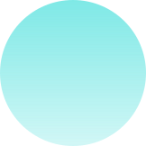
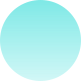

Экосистема маркетинговых исследований и продуктов для бизнеса
Вращаем мир вокруг сервиса для гармонии бизнеса и людей
Наша экспертиза


Свяжитесь с нами
Мы открыты для вопросов, деловых запросови консультаций. Свяжитесь с нами сегодня, и сотрудник нашей команды поддержки свяжется с вами в ближайшее время

Инструменты
Качественные исследования
- Глубинные интервью (in-depth interview)
- Этнография
- Фокус-группы
- Наблюдения
- Accompanied Checking
- Фасилитационные сессии
ТРЕКИНГ И АНАЛИТИКА HR-ИНДЕКСОВ
- ENPS – Индекс удовлетворенности и вовлеченности персонала
- EJM – Карта пути соискателя
- Эмоциональная компетентность и ментальное здоровье сотрудников
Трекинг И АНАЛИТИКА CX-индексов
- CSI – Индекс удовлетворенности потребителей
- CES – Индекс усилий клиента
- NPS – Индекс потребительской лояльности
- PAS – Индекс персонализации сервиса
SERVICE DESIGN И DESIGN THINKING
- Определение персон
- Карта клиентского пути (CJM)и Jobs-to-be-Done
- Сбор и приоритезация идей
- Прототипирование
- Тестирование решений
Тайный покупатель
- Программа менеджмента сервиса "Тайный покупатель"
- Конкурентный Mystery Shopping
- Мотивационный Mystery Shopping
- Тайный соискатель
Колличественные исследования
- Опросы «face to face»
- Опросы телефонные
- Опросы онлайн
- Валидация аудио-, фото-, видеоконтента
АУДИТЫ
- Открытый аудит
- Закрытый аудит
- Ревизии
- Инвентаризация
- Мониторинг цен в сети Интернет
- Мониторинг цен в рознице
КАБИНЕТНЫЕ ИССЛЕДОВАНИЯ
- Анализ вторичной информации из открытых источников
- Web Social Media мониторинг
- Мониторинг медиа
Ресурсы
- МОДЕРАТОРЫ И ИНТЕРВЬЮЕРЫ
- 5-20 супервайзеров в каждом регионе РФ
- 450+ интервьюеров
- 100% аудио запись, валидация, геочекинг, опросы на планшетах
- 30 опытных модераторов
- Составление гайдов ФГ и интервью
- Оnline комнаты для проведения фокус-групповыхдискуссий и глубинных интервью
- ПАТЕНТЫ НА ОБЪЕКТЫ ИНТЕЛЛЕКТУАЛЬНОЙ СОБСТВЕННОСТИ
- Субъективный индекс
- Путь Тайного покупателя Remote Accompaniment
- Индекс персонализированного сервиса
- Методика вовлеченности персонала
- МЕТОДИСТЫ И АНАЛИТИКИ
- Собственный штат аналитиков
- Отчеты в xlsx, spss, ppt Power BI, Tablue, QlikView
- Big Data


- МОДЕРАТОРЫ И ИНТЕРВЬЮЕРЫ
- 5-20 супервайзеров в каждом регионе РФ
- 450+ интервьюеров
- 100% аудио запись, валидация, геочекинг, опросы на планшетах
- 30 опытных модераторов
- Составление гайдов ФГ и интервью
- Оnline комнаты для проведения фокус-групповыхдискуссий и глубинных интервью
- ПАТЕНТЫ НА ОБЪЕКТЫ ИНТЕЛЛЕКТУАЛЬНОЙ СОБСТВЕННОСТИ
- Субъективный индекс
- Путь Тайного покупателя Remote Accompaniment
- Индекс персонализированного сервиса
- Методика вовлеченности персонала
- МЕТОДИСТЫ И АНАЛИТИКИ
- Собственный штат аналитиков
- Отчеты в xlsx, spss, ppt Power BI, Tablue, QlikView
- Big Data
 


Не нашли нужные ресурсы?
Задайте нам вопрос и опишите вашу потребность
Клиенты
Расскажите о своей задаче
Оставьте заявку на просчет коммерческого предложения или помощь в разработке концепции исследования.

о компании

Компания Сервизория
Является членом международной ассоциации провайдеров услуги Тайный Покупатель MSPA, эксперты компании являются членами международной ассоциации компаний – участников рынка маркетинговых исследований ESOMAR, а также мы проходим ежегодную сертификацию менеджмента качества ISO 20292:2019 и 9001:2015.
Наша большая идея – открыть нашим клиентам новые возможности для роста и развития бизнеса, опираясь на безупречные данные о потребителях и рынках
Наши ключевые партнеры
Это российские телекоммуникационные компании, банки, страховые, продовольственные и непродовольственные розничные сети, интернет-агрегаторы и экосистемы, сети медицинских лабораторий и клиник, производители товаров ежедневного спроса и промышленный сектор
НАС МНОГО – В КАЖДОМ УГОЛКЕ РФ
Сервизория – это экосистема маркетинговых исследований и продуктов. С 2016 года наша компания занимается:
- маркетинговыми исследованиями
- исследованиями клиентского опыта
- исследованием пути клиента в цифровых сервисах
- аудитом бизнес-процессов в розничных сетях
- аудит рекламно-информационных материалов
- организацией рекрутинга респондентов
- анализом рынков
- мониторингом цен
- качественными исследованиями
- количественными исследованиями, всех видов, обеспечивая репрезентативное покрытие каждого региона РФ, включая населенные пункты от 10 тыс. человек.
Наша миссия
ВРАЩАЕМ МИР ВОКРУГ СЕРВИСА
для гармонии бизнеса и людей
наши ценности
Место. Люди. Время. Страсть
Место дает нам Идеи, Люди дают нам Радость, Время дает нам Смелость, Страсть дает нам Силу


Свяжитесь с нами
Мы открыты для вопросов, деловых запросови консультаций. Свяжитесь с нами сегодня, и сотрудник нашей команды поддержки свяжется с вами в ближайшее время